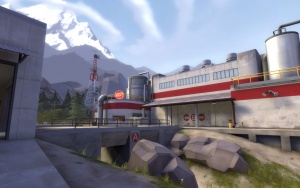

Mapas Mapas são os ambientes onde o jogabilidade de Team Fortress se passa. De acordo com o universo do jogo, esses locais são áreas onde as companhias RED e BLU se sobressaem. Como o território e as propriedades não podem ser adquiridas por meios legais, os 9 mercenários são enviados por cada companhia para capturar o território à força completando uma série de objetivos. Inicialmente, o jogo foi lançado com apenas três modos de jogo (CP, CTF, TC) em seis mapas (Dustbowl, Granary, Gravel Pit, Well, 2Fort, Hydro). Entretanto, com várias atualizações, a quantidade de mapas foi aumentada e hoje são 100 mapas oficiais, com vários novos modos de jogo. Muitos destes mapas foram criados por membros da comunidade, e foram selecionados pela Valve para aparecerem no jogo de forma oficial, devido a sua excelente qualidade; Mapas da comunidade são identificados com a cerquilha (‡). Alguns dos mapas mais famosos são: 2Fort Turbine 
Brazil Egypt Gorge  Badwater Basin Upward Gravel Pit Hoodoo Hightower Badlands Dustbowl Barneo Goldrush Barnblitz 
Foundry Pipeline |